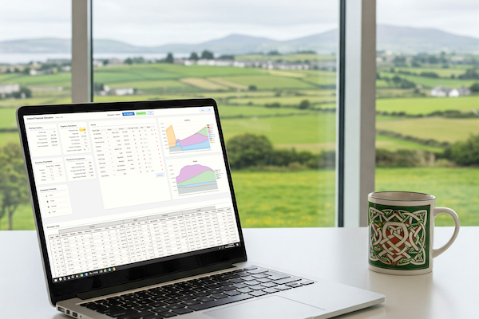

A private sandbox for testing salary changes, house purchases, pension contributions, retirement timing, investments, market shocks, and other what-if scenarios, all in your browser.
Try The Simulator
Model your financial future with customizable life events and economic conditions.
Accurate modeling of local taxes for multiple countries. See what happens if you move to another country.
Test your financial plan against market crashes and adverse economic conditions.
Your financial data never leaves your device. Everything runs locally in your browser. No accounts, no servers.
Understand the probability of success with volatility-based simulations.
See the year by year detailed breakdown of numbers. Hover to see where each number comes from.
Enter your current financial situation and goals, and expected economic conditions. There's detailed help for each field. All data stays in your browser.
Create events for income, expenses, and major life changes like buying a house or changing jobs. A wizard is there to help you create events.
See how your financial future could unfold through detailed graphs and year-by-year breakdowns. Get a high-level overview or dive into the numbers.
Tweak assumptions, save versions, see where your plan is more likely to fail, learn which decisions actually move the needle.
I'm a software developer with a passion for financial literacy and an itch I needed to scratch.
When I started my investment journey I hired a financial advisor who gave me sound advice and a view of my financial future. But I wanted to run so many different scenarios that it felt like I was abusing their flat-fee service. So I decided to build my own tool to test all my ideas guilt-free.
I first built it as a google sheet and shared it on reddit, but every time I made a change it forced users to make a new copy and re-enter their data. So I turned it into this website.
I believe that everyone should have access to tools that help them understand the potential impact of financial decisions, even if they're not financial experts.
I hope this tool helps you as much as it helped me.
Educational Purpose Only: This is a tool to help you understand how different decisions affect your financial future. It is not a budgeting tool nor financial advice. Don't make serious life decisions based on this—it's not a substitute for a good financial advisor.